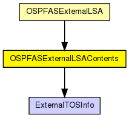
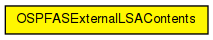

Represents the contents of an OSPF AS External LSA
The following diagram shows usage relationships between types. Unresolved types are missing from the diagram.
The following diagram shows inheritance relationships for this type. Unresolved types are missing from the diagram.
| Name | Type | Description |
|---|---|---|
| networkMask | IPAddress | |
| E_ExternalMetricType | bool | |
| routeCost | unsigned long | |
| forwardingAddress | IPAddress | |
| externalRouteTag | long | |
| externalTOSInfo | ExternalTOSInfo[] |
// // Represents the contents of an OSPF AS External LSA // class OSPFASExternalLSAContents { IPAddress networkMask; bool E_ExternalMetricType = false; unsigned long routeCost = 1; IPAddress forwardingAddress; long externalRouteTag = 0; ExternalTOSInfo externalTOSInfo[]; }